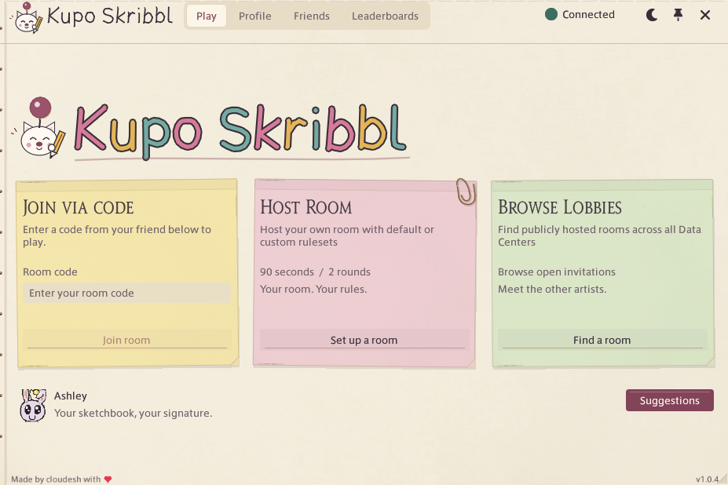
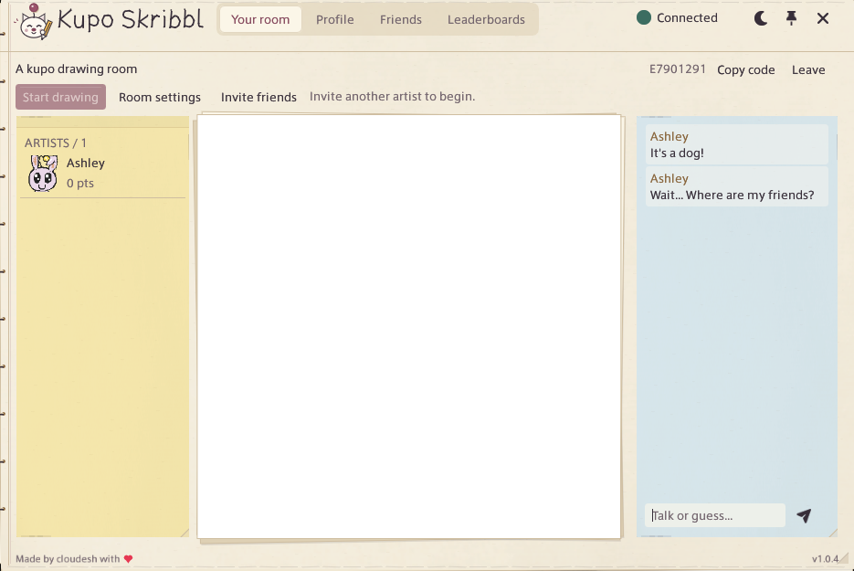

Pick the words
Choose from FFXIV, general, meme and video-game lists, or add your own words. Matches with custom words don’t count towards lifetime stats.
Drawing & guessing in FFXIV
A free Pictionary-style game for 2–16 players. Draw a word, guess in chat, then swap turns. It all runs inside Final Fantasy XIV through Dalamud.
Open source. Installed through a custom repository.

Start a room with friends, or join a public lobby. You can play together across worlds and Data Centers.

Share a room code or browse public lobbies. Each player needs the plugin installed.
Use the pencil, fill, eraser and shapes. The host chooses the timer and number of rounds.
Earlier correct guesses earn more points. The drawer scores when people solve the word. Highest score wins.
Choose from FFXIV, general, meme and video-game lists, or add your own words. Matches with custom words don’t count towards lifetime stats.
Draw your own portrait or pick a moogle. Add friends and invite them to your room. Stats and leaderboards are optional.
You’ll need XIVLauncher with Dalamud enabled.
Add the repository once, then install from the plugin installer.
Type /xlsettings in game chat. Go to Experimental → Custom Plugin Repositories.
Copy this address, paste it into the repository field, press +, then Save.
Open /xlplugins, search for Kupo Skribbl, and select Install.
Type /kupo and create your profile. Keep your recovery code somewhere private.
Experimental, unofficial community plugin. Distributed through a custom repository; not listed in the official Dalamud repository. Each player needs it installed.
No. Everyone connects to the same maintained server automatically. You just need the plugin and an internet connection.
Add the custom repository above and save, then search again in /xlplugins. After a game patch, Dalamud or plugins may need updates before they work again. The Dalamud FAQ covers launcher troubleshooting.
Yes, if there’s space. Start guessing straight away; you’ll join the drawing rotation next round, or next match if it’s the final round.
Your Kupopop profile is separate from your Square Enix account. Manage sharing, stats and background invitations in Profile → Privacy & invitations. Closing the plugin leaves your room.
If you enable stats, leaderboards use an anonymous name and your portrait by default. You can hide the portrait, show your name or opt out. See the full privacy details.